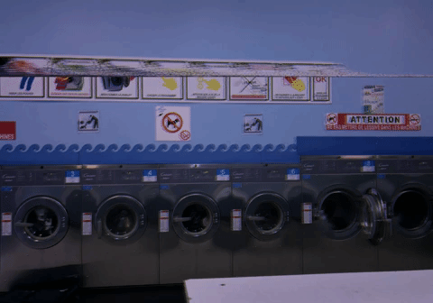

 LE NARRATEUR, fronçant les sourcils.
... nous ne sommes pas dans la bonne dimension. il est ici question d'une odeur de lessive fraîche, d'un monde qui s'enfonce dans la spirale infernale, représentée par le mouvement d'une machine à laver en marche, de disparitions étranges, où une laverie délabrée est le théâtre d'une surréaliste scène de crime. nous n'appartenons pas à cette histoire. retournons sagement dans la notre. RETOUR AU PRÉSENT.L'AUTEUR, préparant son entrée en scène. j'aime beaucoup ce sujet.